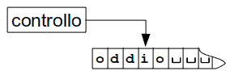
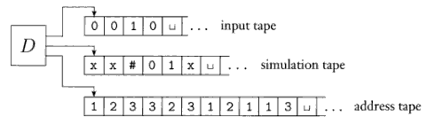

Torna alla pagina di Informatica Teorica
:: Informatica Teorica - Macchina di Turing ::
Appunti & Dimostrazioni del 21 Aprile
Concetti iniziali
La Macchina di Turing (da ora, MdT) è un modello per calcolatore general purpose. Si tratta di un modello molto potente, molto più di tutti quelli visti finora, ed è in grado di fare tutto ciò che un computer reale può fare, quindi risolvere problemi che si trovano entro il limite della calcolabilità.
Vediamo le caratteristiche:
- usa un nastro infinito come memoria illimitata;
- ha una testina che può leggere e scrivere simboli sulle celle del nastro;
- la testina può muoversi lungo il nastro sia a sinistra che a destra;
- a inizio computazione il nastro contiene solo la stringa d'ingresso, mentre tutte le altre celle sono bianche;
- la computazione continua (all'infinito) finché non produce in uscita un accetta o un rifiuta, che si riferiscono rispettivamente agli stati di accettazione o rifiuto designati.
Lo schema di una possibile MdT è il seguente:

La MdT come modello di calcolo è stato introdotta nel 1936 da Alan Turing per dare risposta all'Entscheidungsproblem (problema di decisione) proposto da Hilbert nel suo programma di fondazione formalista della matematica.
Esempio 1
Dobbiamo creare una MdT M che verifichi l'appartenenza di una stringa al linguaggio:
B = {w#w | w ∈ {0,1}* }
In pratica M dovrà accettare stringhe binarie composte da due sottostringhe identiche separate dal simbolo #, e rifiutare tutte le altre. Come fare? Memorizzare tutti i caratteri di una sottostringa e confrontarli con la seconda sarebbe folle, perché possono essere di lunghezza spropositata. La soluzione è far spostare avanti e indietro la testina lungo il nastro per confrontare i caratteri delle due sottostringhe che si trovano alla stessa posizione, e se questi corrispondono ci mettiamo un bel marcatore per ricordarci che li abbiamo già esaminati.
Questa descrizione non ci basta, ne vogliamo una non troppo formale ma sicuramente più precisa:
M = "su ingresso w:
- vai avanti e indietro lungo il nastro tra le posizioni corrispondenti delle sottostringhe separate dal simbolo #, e verifica se queste posizioni contengono lo stesso simbolo. In caso negativo, o se non si trova nessun simbolo #, RIFIUTA; altrimenti se i simboli corrispondono sostituiscili col simbolo
x;
- quando tutti i simboli a sinistra del # sono stati sostituiti con la
x, controlla se ne rimangono altri non segnati a destra. Se sì, allora RIFIUTA; altrimenti ACCETTA."
Vediamo un esempio di esecuzione (la v sopra un carattere indica la posizione della testina):
v
0 1 1 0 # 0 1 1 0 _ ...
v
x 1 1 0 # 0 1 1 0 _ ...
v
x 1 1 0 # x 1 1 0 _ ...
v
x 1 1 0 # x 1 1 0 _ ...
v
x x 1 0 # x 1 1 0 _ ...
...
v
x x x x # x x x x _ ...
accetta!
Definizione formale
Una MdT è una 7-upla (Q,Σ,Γ,δ,q0,qaccetta,qrifiuta), dove:
- Q è l'insieme degli stati
- Σ è l'alfabeto dei simboli in ingresso, che non contiene il simbolo blank |_|
- Γ è l'alfabeto del nastro, dove |_| ∈ Γ e Σ ⊆ Γ
- δ: Q × Γ → Q × Γ × {L,R} è la funzione di transizione
- q0 ∈ Q è lo stato iniziale
- qaccetta ∈ Q è lo stato accettante
- qrifiuta ∈ Q è lo stato rifiutante, dove qaccetta≠qrifiuta
La funzione di transizione δ in pratica dice che quando la macchina si trova in uno stato q e la testina è su una cella che contiene il simbolo b, sostituisce quest'ultimo col simbolo a e si sposta nello stato r. Lo spostamento è verso sinistra se il terzo componente della funzione di transizione è L; mentre se è R si sposta verso destra. Riassumendo il tutto, spostandoci ad esempio a sinistra: δ(q,a)=(r,b,L).
Funzionamento della MdT
Siano dati:
- una MdT M=(Q,Σ,Γ,δ,q0,qaccetta,qrifiuta)
- una stringa di ingresso w tale che w = w1w2..wn, dove ogni wi fa parte dell'alfabeto Σ*
Inizialmente w occupa le prime n celle a sinistra del nastro, e la testina si trova sulla prima cella a sinistra. Poiché l'alfabeto Σ non contiene il simbolo blank, il primo |_| che appare sul nastro coincide con la fine dell'ingresso.
Una volta che M è partita, la computazione procede in accordo alle regole descritte dalla funzione di transizione. Si noti che se ci viene chiesto di spostarci a sinistra del limite sinistro del nastro, rimaniamo fermi sulla prima cella senza sforare. La computazione continua fino a quando non si arriva a un qaccetta o un qrifiuta, nel qual caso la MdT termina; altrimenti va avanti all'infinito.
Durante la computazione, M continua a modificare lo stato corrente, il contenuto del nastro e la posizione della testina. I valori assunti da questi tre elementi ad ogni passo prendono il nome di configurazione della MdT. Le configurazioni possono essere rappresentate in una forma molto semplice, che spieghiamo con un esempio: 010001q301011, significa che il contenuto del nastro è 01000101011, che lo stato corrente è q3, e che la testina si trova sul carattere all'immediata destra dello stato, ovvero sul quinto 0.
Si dice che una configurazione C1 produce una configurazione C2 se la MdT può passare legalmente da C1 a C2 in un unico passo.
Alcune configurazioni importanti di M sono:
- configurazione di partenza, ovvero q0w;
- configurazione di accettazione, in cui lo stato corrente è qaccetta;
- configurazione di rifiuto, in cui lo stato corrente è qrifiuta.
Tutte queste definizioni ci servivano per dire che M accetta l'ingresso w se esiste una sequenza di configurazioni C1, ... , Ck tali che:
- C1 è la configurazione di partenza di M sull'ingresso w;
- ogni Ci produce Ci+1;
- Ck è la configurazione di accettazione.
Definizioni
L'insieme di stringhe che M accetta sono chiamate linguaggio di M, o linguaggio riconosciuto da M, scritto anche L(M).
Chiamiamo un linguaggio Turing-riconoscibile se esiste una MdT che lo riconosce.
Una MdT può accettare, rifiutare o andare in loop su un certo ingresso, dove per loop si intende quel comportamento per cui non si arriva mai a uno stato di terminazione. Dato che è difficile sapere se la fase di loop è temporanea o definitiva, spesso alle MdT generiche si preferisce una variante chiamata decisori, che arrivano sempre a una decisione finale (la stringa è accettata oppure no). Se un decisore riconosce un certo linguaggio, si può dire anche che lo decide.
Chiamiamo un linguaggio Turing-decidibile o semplicemente decidibile se esiste una MdT che lo decide.
Varianti
Della MdT vedremo due varianti molto importanti: la MdT multinastro e quella n.d.. Si noti che ognuna di esse ha le stesse potenzialità dato che riconosce gli stessi linguaggi delle altre (sono quindi equivalenti); questa proprietà è detta robustezza.
MdT multinastro
Una MdT multinastro si differenzia da quelle "standard" per le seguenti caratteristiche:
- ha più nastri, ognuno con la propria testina per leggere e scrivere;
- inizialmente la stringa d'ingresso si trova solo sul primo nastro, mentre tutti gli altri sono inizializzati coi simboli blank (quindi sono considerati vuoti);
- la funzione di transizione cambia nella forma:
δ: Q × Γk → Q × Γk × {L,R,S}k
, dove gli indici k permettono di compiere più operazioni su k nastri contemporaneamente, mentre l'aggiunta del simbolo S indica che la testina può muoversi a sinistra (L), a destra (R) o stare ferma (S, Stay).
Come dicevamo, e contrariamente a quanto possa sembrare, la MdT multinastro è equivalente a quella a nastro singolo, e per convincervi scomodiamo un teorema.
Teorema 1 - sulle MdT multinastro
Ogni MdT multinastro ha una equivalente MdT a singolo nastro.
Dimostrazione
Ciò che dobbiamo fare è riuscire a convertire una MdT multinastro M nell'equivalente a singolo nastro S. L'idea è copiare il contenuto dei k nastri di M sull'unico nastro di S, e separarli da un carattere delimitatore, ad esempio il #. Per quanto riguarda invece le testine di M, possiamo mettere un pallino sopra ogni carattere in S corrispondente. Nel nostro caso useremo il simbolo °; ad esempio nella stringa w1w°2w3 la testina "virtuale" è sul carattere w2.
Proviamo a dare una descrizione più completa dell'algoritmo di conversione, che tenga conto anche di casi critici come lo spostamento su un simbolo #.
S = "su ingresso w = w1...wn:
- scrivi sul nastro la configurazione iniziale di M nel formato corretto:
#w°1w2...wn#|_|°#|_|°#...#
- per simulare una singola mossa: (a) fai uno scan del nastro partendo dal primo # (limite sinistro) al (k+1)simo # (limite destro), così da capire dove sono posizionate le testine virtuali; (b) fai un secondo scan per aggiornare il nastro in accordo alle funzioni di transizione di M
- se, applicando le funzioni di transizione di M, la testina di S si sposta a destra di un #, significa che in M si sarebbe finiti su una cella blank. Quindi, S deve scrivere un simbolo blank in quella cella e shiftare a destra di una posizione tutti i caratteri rimanenti del nastro. Fatto questo, può continuare la simulazione."
Corollario al Teorema 1
Un linguaggio è Turing-riconoscibile se e solo se esiste una MdT multinastro che lo riconosce.
Dimostrazione
Il teorema è un "se e solo se", quindi vanno dimostrati entrambi i sensi delle implicazioni.
(I) Se un linguaggio è Turing-riconoscibile, allora esiste una MdT multinastro che lo riconosce
Dato che un linguaggio è Turing-riconoscibile se esiste una MdT a singolo nastro che lo riconosce, e che questa è un caso particolare di una MdT multinastro (dove il numero di nastri k=1), l'implicazione è banalmente risolta.
(II) Se un linguaggio è riconosciuto da una MdT multinastro, allora è Turing-riconoscibile
Dato che per il Teorema 1 ogni MdT multinastro ha una equivalente MdT a singolo nastro, e che un linguaggio è Turing-riconoscibile se esiste una MdT (a singolo nastro) che lo riconosce, anche la seconda implicazione è banalmente risolta.
MdT non deterministica
Una MdT non deterministica può procedere ad ogni punto della computazione secondo diverse possibilità. La funzione di transizione assumerà dunque la nuova forma:
δ: Q × Γ → P(Q × Γ × {L,R,S})
Teorema 2 - sulle MdT non deterministiche
Ogni MdT n.d. ha una equivalente MdT deterministica.
Dimostrazione
Dobbiamo dimostrare che è possibile simulare una MdT n.d. N con una MdT deterministica D. L'idea è semplice: D dovrà tentare tutti i possibili rami di computazione n.d. di N, e se arriva a uno stato di accettazione, accetta.
Come sappiamo, la computazione di N può essere vista come un albero, in cui ogni ramo rappresenta un ramo del nondeterminismo ed ogni nodo una configurazione di N (ad esempio, la radice è quella di partenza). D dovrà quindi esplorare l'albero alla ricerca di una configurazione di accettazione. Ocio però: non conviene fare un'esplorazione per profondità (dalla radice alla foglia, e poi ancora su) perché potrei incappare in un ramo infinito e non uscirne mai più (è il nondeterminismo, bellezza!). La strategia giusta è quella in larghezza, in cui prima controllo tutti i nodi sullo stesso livello, poi passo a quello più in basso.
Ora che sappiamo cosa fare, cosa facciamo? :|
Costruiamo D come una MdT a 3 nastri (tanto il Teorema 1 ci dice che possiamo sempre convertirla in una a singolo nastro), ognuno dei quali ha un proprio ruolo:
- contiene la stringa d'ingresso, ed è in sola lettura;
- mantiene una copia del nastro di N su un certo ramo
n.d. di computazione, su cui fa le simulazioni;
- tiene traccia della posizione di D sull'albero di computazione
n.d. di N. Ad esempio la sequenza 123 significa che devo partire dalla radice, spostarmi sul suo primo figlio, da qui andare al suo secondo figlio, e infine da qui al suo terzo figlio.
Ecco uno schema:

Descriviamo D, in modo meno formale del solito:
D = "
- inizialmente abbiamo sul primo nastro l'ingresso w, mentre gli altri due sono vuoti;
- copiamo il contenuto del primo nastro sul secondo;
- simuliamo sul secondo nastro il comportamento di N con ingresso w su un certo ramo di computazione
n.d.. Prima di ogni passo di N dobbiamo consultare il prossimo simbolo sul terzo nastro, così da capire quale scelta dobbiamo fare tra quelle consentite dalla funzione di transizione di N. Se non ci sono più simboli sul terzo nastro, o quella scelta non è valida, usciamo da questo ramo di computazione e andiamo al passo 4. Stessa cosa se troviamo una configurazione di rifiuto. Se invece troviamo una configurazione di accettazione, D ACCETTA l'ingresso;
- sostituisci la stringa sul terzo nastro con quella successiva. Simula il prossimo ramo di computazione di N tornando al passo 2."
Corollario al Teorema 2
Un linguaggio è Turing-riconoscibile se e solo se esiste una MdT n.d. che lo riconosce.
Dimostrazione
Il teorema è un "se e solo se", quindi vanno dimostrati entrambi i sensi delle implicazioni.
(I) Se un linguaggio è Turing-riconoscibile, allora esiste una MdT n.d. che lo riconosce
Dato che un linguaggio è Turing-riconoscibile se esiste una MdT deterministica che lo riconosce, e che questa è un caso particolare di una MdT n.d., l'implicazione è banalmente risolta.
(II) Se un linguaggio è riconosciuto da una MdT n.d., allora è Turing-riconoscibile
Dato che per il Teorema 2 ogni MdT n.d. ha una equivalente MdT deterministica, e che un linguaggio è Turing-riconoscibile se esiste una MdT deterministica che lo riconosce, anche la seconda implicazione è banalmente risolta.
Torna alla pagina di Informatica Teorica